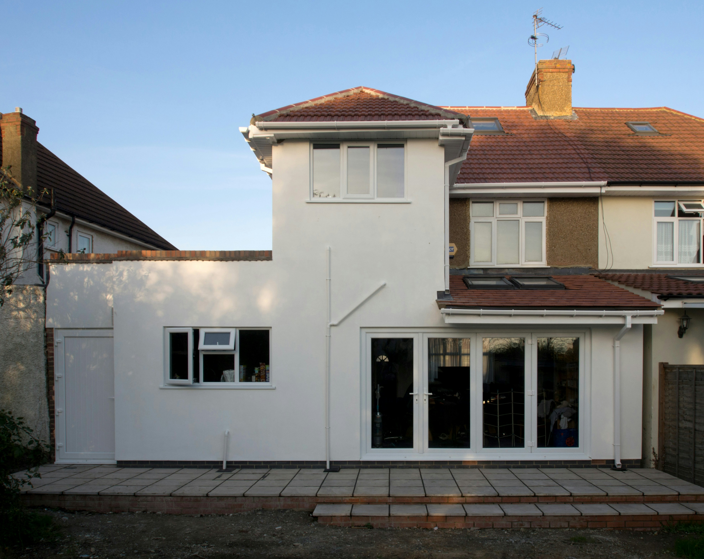
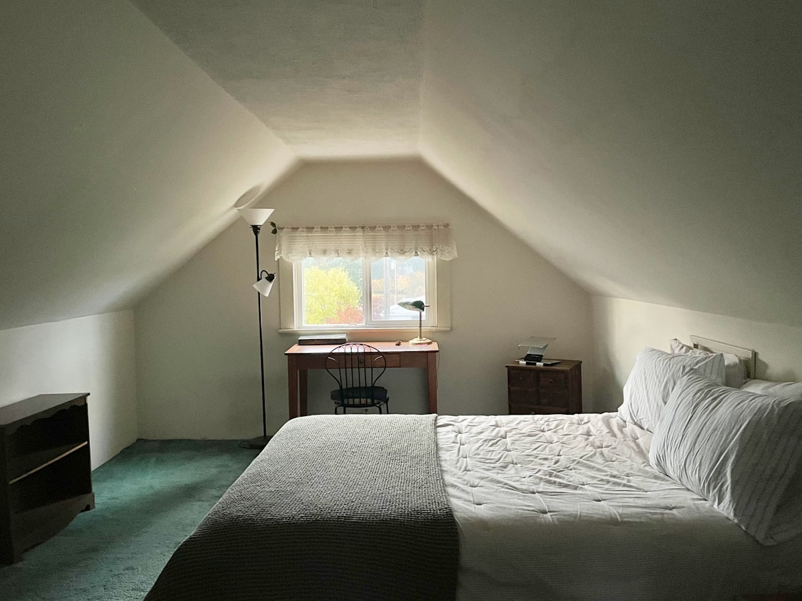
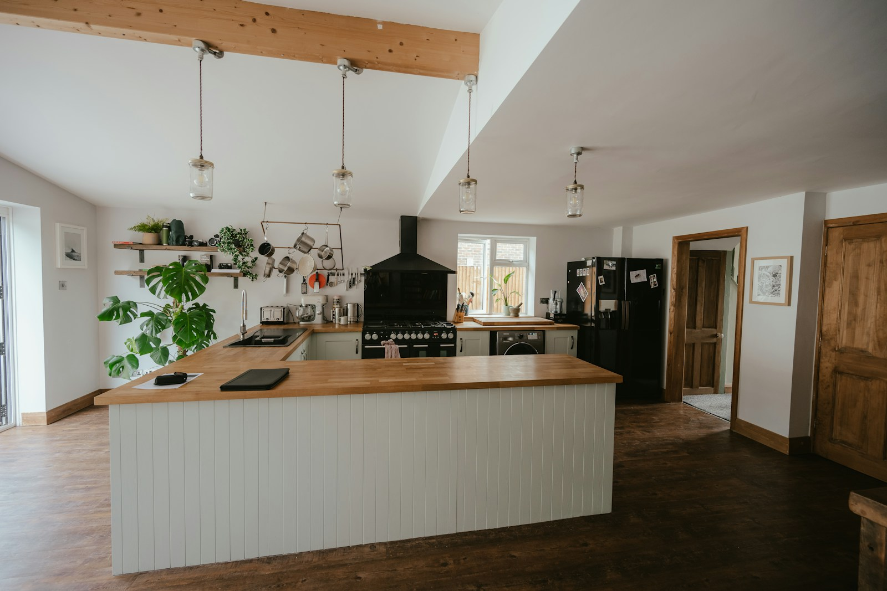
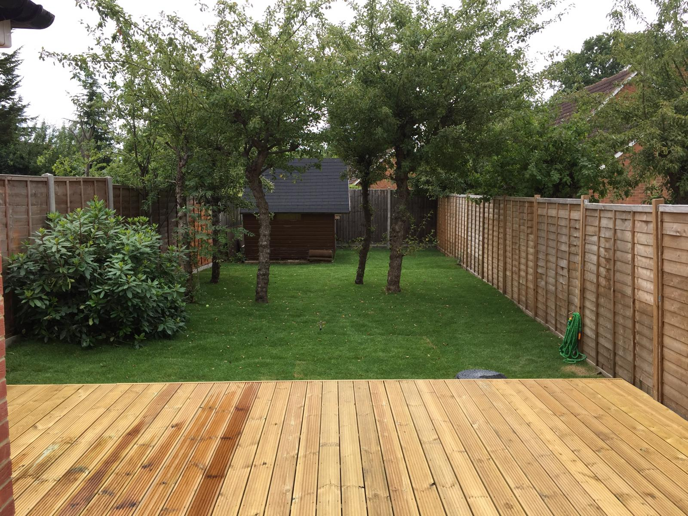

Listen & explore
A free initial consultation and feasibility survey to understand your property and priorities.
OUR SERVICES
One considered approach to construction, refurbishment and maintenance for London homes and commercial properties.
01 / BUILD & TRANSFORM
More space. A better way to live. Thoughtful kitchen extensions, structural changes and basement projects.

02 / BUILD & TRANSFORM
Make room above. Dormer, mansard, hip-to-gable and rooflight conversions, shaped around your property.

03 / BUILD & TRANSFORM
Spaces that work beautifully. Bespoke fitting, plumbing, tiling and carefully considered finishes.

04 / FINISH & MAINTAIN
The detail underfoot. Solid and engineered wood, porcelain, laminate, carpet and precise joinery.
05 / FINISH & MAINTAIN
Keep your property at its best. Brickwork, painting, repairs, plumbing and electrical coordination.
06 / FINISH & MAINTAIN
A better connection outdoors. Garden clearance, paving and considered structural redesign.

SEASONAL PROPERTY CARE
Ask about insulation upgrades, window seal checks, draught exclusion and heating diagnostics. We can help identify issues and discuss appropriate specialist assessment.
Ventilation and heating changes should be assessed for your property. Do not block required ventilation or combustion air supplies.
Read our property care guidanceHOW WE WORK
A free initial consultation and feasibility survey to understand your property and priorities.
A written scope, exclusions, programme and stage payment schedule before work begins.
Agreed milestones, progress updates and coordinated specialist trades.
A final walkthrough, snagging review and relevant project documentation.
Survey availability, pricing, payment stages, certification and any workmanship guarantee are agreed for each project in writing.
YOUR NEXT CHAPTER STARTS HERE
Tell us what you have in mind.
We’ll help you find the way forward.